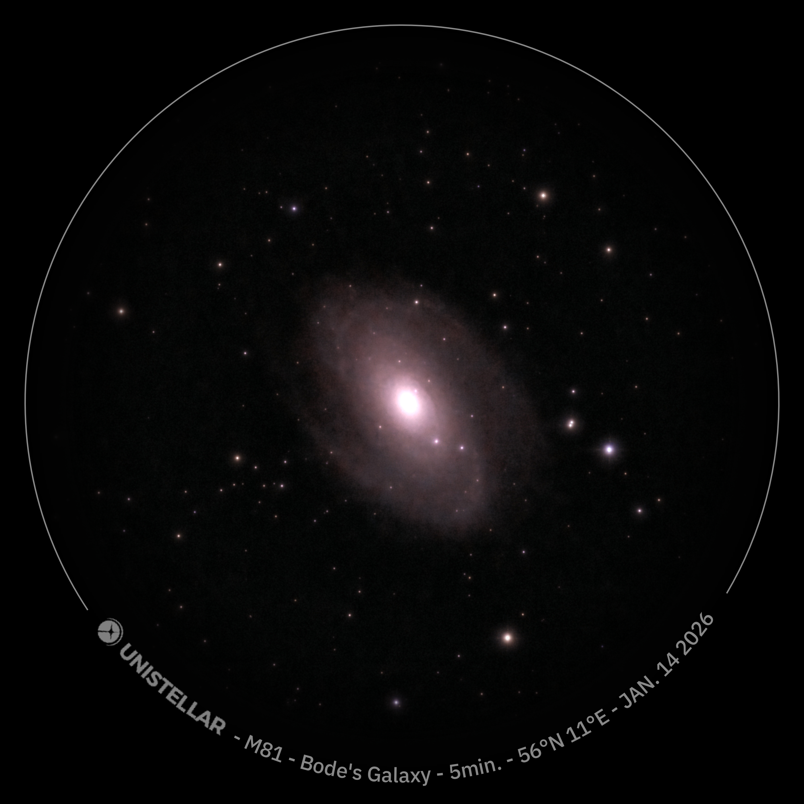

Galaxy

M81 · NGC 3031
Bode's Galaxy
One of the brightest galaxies in the northern sky, discovered by Johann Elert Bode in 1774. M81 is a classic spiral galaxy with a well-formed core and broad arms. It lies almost directly above the Big Dipper in the constellation Ursa Major.
ConstellationUrsa Major
Distance~12 million light years
Exposure5 minutes
Date14 Jan 2026